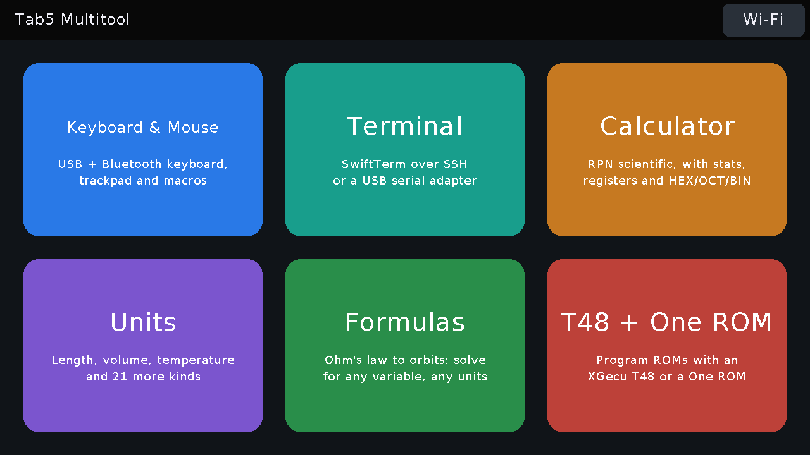

Tab5 Multitool
Firmware v0.2.1 for the M5Stack Tab5: a home screen of apps. Every app works by touch; the Tab5 Keyboard is optional. Source, docs and licences on GitHub.

- Keyboard & Mouse: a USB and Bluetooth keyboard, trackpad and macro pad for a computer.
- Terminal: an SSH terminal (SwiftTerm), or a terminal on a USB serial adapter.
- Calculator: an RPN scientific calculator with statistics, registers and HEX/OCT/BIN.
- Units: 24 kinds of unit; type things like
100 F in Cor5 ft 3 in to cm. - Formulas: 207 formulas in 15 groups, from Ohm's law to orbits. Fill in what you know, solve for any variable, with diagrams, unit help and conversions.
- T48 + One ROM: program ROMs with an XGecu T48 or a One ROM (T48 for Tab5).
1. Install the firmware
- Use Chrome or Edge on a desktop (Web Serial is needed; Safari and Firefox do not have it).
- Connect the Tab5's USB-C port to the computer and switch the Tab5 on.
- Click Install below and choose the Tab5's port (it is usually called USB JTAG/serial debug unit).
If no port shows up or the install fails: hold the Tab5's power button to put it in download mode, then try again. Installing replaces whatever firmware the Tab5 had.
2. Join Wi-Fi
- On the home screen, tap Wi-Fi at the top right. The Tab5 lists the networks it can hear.
- Tap yours and type its password, on the clip-on keyboard or the on-screen one, then Join. For a hidden network, tap Other network and type its name first.
The Terminal needs Wi-Fi for SSH, and the macro pad's web editor is served over it. T48 uses the same network.
3. T48 + One ROM (optional)
- Download the SD card zip from the latest release
(
tab5-multitool-sdcard-v0.2.1.zip). - Format a microSD card as FAT32 (the Tab5 cannot read exFAT; cards over 32 GB usually come as exFAT).
- Unzip it onto the card so the card has a
burnerfolder at its top level, and put the card in the Tab5. - Plug the T48 (or a One ROM) into the Tab5's USB-A port and open T48 + One ROM. Its own README covers the rest.
Updating later
Keyboard & Mouse takes over the USB-C port, so the installer can't reach the Tab5 while it runs. Tap Home first (or, in Keyboard & Mouse, Setup then Firmware update mode), then install as above. Your settings, saved Wi-Fi network and macros stay unless you choose to erase the device.
The firmware is GPL-3.0-or-later because it includes T48 for Tab5 and minipro; the Multitool's own code is MIT.